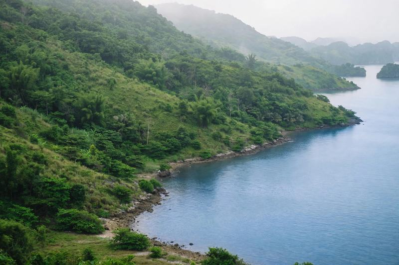

芽庄是越南庆和省的沿海城市，属于惠安系产区。芽庄沉香的香韵以清甜、凉意、花香为主，室温下清雅，上炉后层次分明，前调凉、尾调甜，留香干净。
油脂上，芽庄料的油线细腻自然，颜色棕褐，深浅过渡自然。老料油脂丰富，密度较大；新料相对轻，香韵清淡一些。
芽庄沉香在历史上就是贡品级别的香材，古代通过海上贸易进入中国，被文人、宫廷使用，名气是一代代传下来的。加上香韵确实清雅，符合多数人的口味，口碑越传越广。
名气大也带来一个问题：价格里有一部分是“名字”的溢价。同样的香韵和油脂，挂上芽庄的名字，价格能高不少。买之前想清楚，你买的是料子还是名字。
一是老料少：芽庄的老结香料经过多年采伐，存量越来越少。二是需求大：名气在那，买的人多。三是品牌溢价：产区名字本身就值钱。
价格跨度很大：入门级的芽庄碎料和顶级的老料，价格能差十倍以上。不要看到“芽庄”两个字就觉得贵，也不要看到便宜的“芽庄”就觉得捡漏。
芽庄的野生沉香经过多年采伐，存量很少，而且受保护。市面上的芽庄料绝大多数是种植料：人工种植的沉香树，经过结香、采收、加工，品质稳定，溯源清楚。
种植料不是假货。种植和野生是两种来源，不是真假的区分。好的种植料香韵、油脂都不差。遇到“野生芽庄”，要问合法手续，没有手续的所谓野生料，本身就是问题。
第一，产区名不能当真假证明。检测证书只证明材质是沉香属，不证明产地是芽庄。商家说“芽庄”，要问溯源：产地、批次、结香方式能不能说清。
第二，价格明显低于行情的“芽庄”，基本不是芽庄。便宜的芽庄料，要么是其他产区冒充，要么是品质很差的边角料。
第三，亲自闻。芽庄的招牌是清甜凉意，如果闻着发闷、发甜、带化学味，不管贴什么产区名，都先别买。
喜欢清雅香韵、日常品香熏香的人，芽庄是不错的选择。预算充足、追求经典惠安系风格的人，也可以从芽庄入门。
预算有限的话，不必非买芽庄。老挝、柬埔寨的料香韵接近，价格亲民很多，入门体验不差。
| 看什么 | 芽庄沉香常见表现 |
|---|---|
| 香韵 | 清甜、凉意、花香，上炉层次分明 |
| 油脂 | 油线细腻，颜色棕褐过渡自然 |
| 密度 | 老料密度大，新料相对轻 |
| 价格 | 名气溢价明显，跨度很大 |
| 适合 | 日常品香熏香，喜欢清雅香韵的人 |